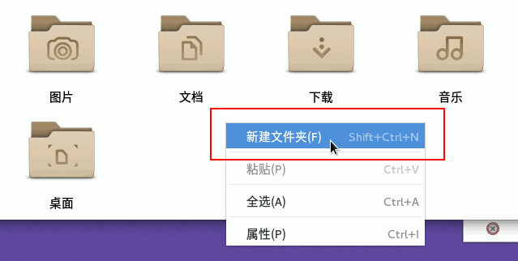

第1课 学会 wps 表格窗口
1、打开主文件夹，看看里面有没有7-3文件夹，没有就建一个

2、点活动、wps，打开绿色电子表格
3、首次激活，去掉左边的“加入计划”，右边点“接受”
4、进入窗口后，点叉（×）按钮，关闭不用的标签；
5、点中间“新建”，或者加号“+”按钮，新建一个空白文档；
7、首先输入表格内容，三门成绩
8、选中第一行两个格子，点右上边的“合并居中”；
9、选中所有格子，设置字体“文泉驿微米黑”，大小24
10、点下面右边的颜色按钮，点“其他颜色”，选一个颜色；
11、点左上角的“WPS表格”，点“保存”；
12、点左下角的“本地文档”
13、上边文件名改成“第1课”，小数点后面不要动，
左边找到主文件夹，找到自己的文件夹，保存；
本节学习了的基础知识，如果你成功地完成了练习，请继续学习下一课内容；
返回目录 下一课
本教程由TeliuTe制作|著作权所有
基础教程网：http://teliute.org/
美丽的校园……
转载和引用本站内容，请保留作者和本站链接。